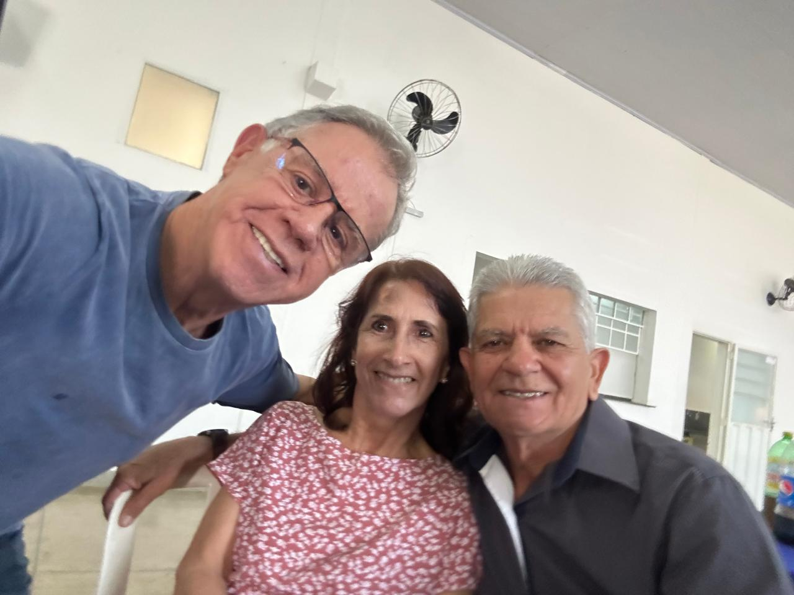
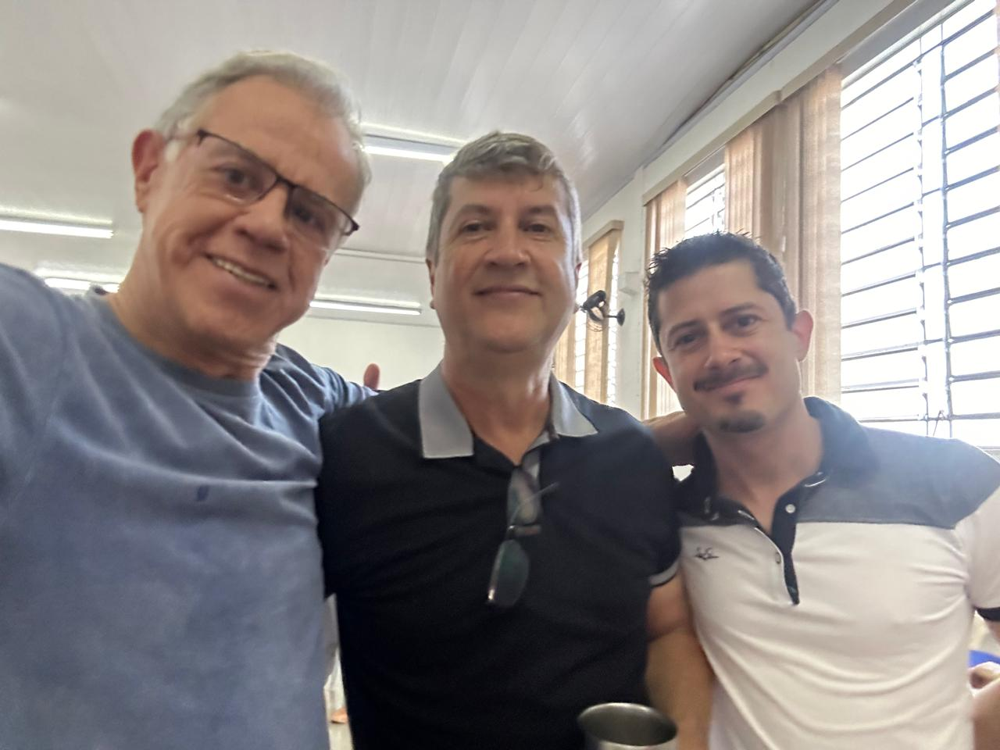
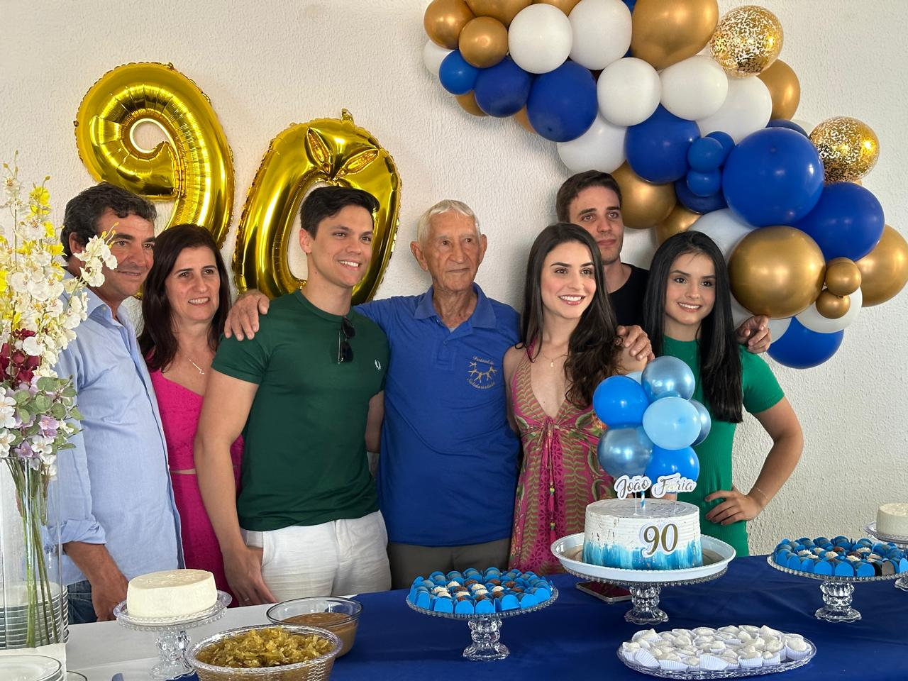
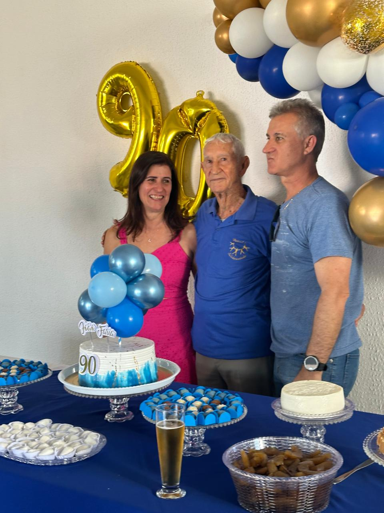
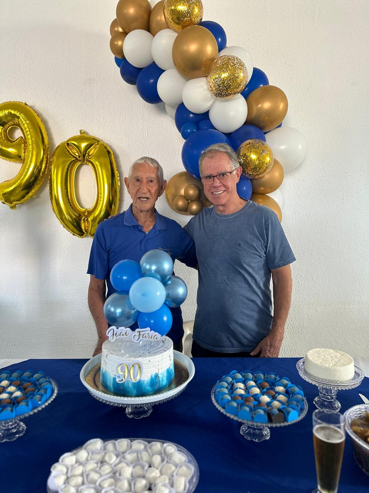

← Voltar aos Encontros

90 anos de João Faria
Celebrando nove décadas de vida, sabedoria e amor familiar
Sobre a Celebração
Homenageado: João Faria
Filho de: Maria Madalena de Faria e Albino Fernandes de Araújo
Ocasião: Celebração de 90 anos de vida
Família: Reunida para celebrar esta data especial
Uma celebração especial em honra aos 90 anos de João Faria, filho de Maria Madalena de Faria e Albino Fernandes de Araújo. Um momento de união familiar para celebrar uma vida repleta de histórias, ensinamentos e amor. Nove décadas de experiências que inspiram e fortalecem os laços familiares, mantendo viva a tradição e a memória de nossa linhagem.




